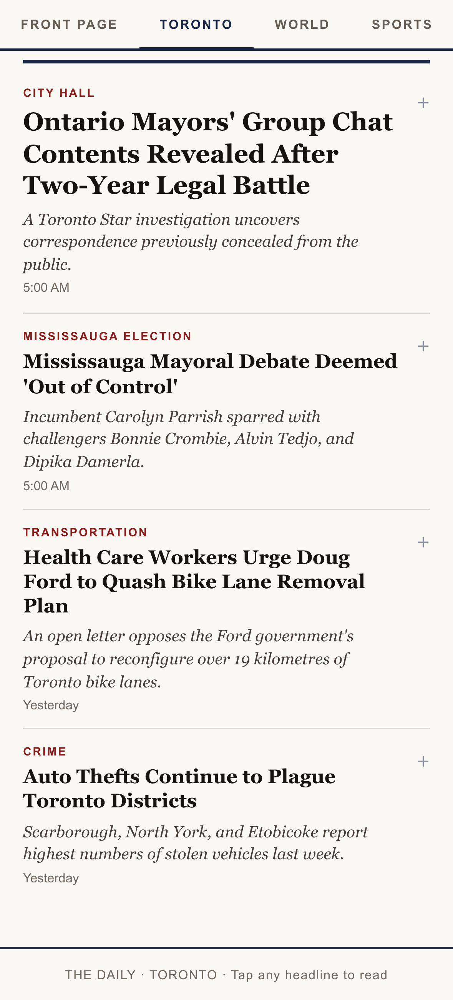
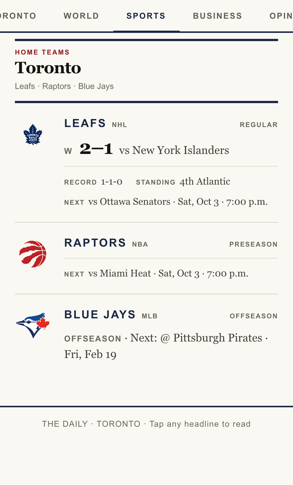
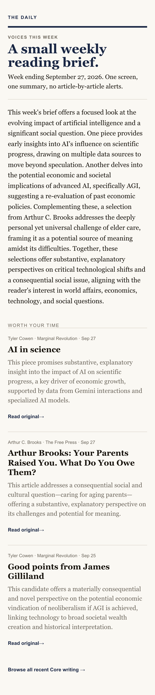

Friday, October 2
7:07








The fix
THE DAILY
One finished paper.
It writes itself
188 stories in.27 make the paper.
Build The Dailyschedule✓ 1m 49s
07:05:57normalized 188 stories
07:06:50gemini-2.5-flash · 200 OK
07:06:50sections=6 stories=27 following=6
07:07:02ntfy · “Today’s edition is ready.”
THE DAILY
TORONTO · WORLD · SPORTS · BUSINESS · OPINION
Ten minutes.Then you’re done.